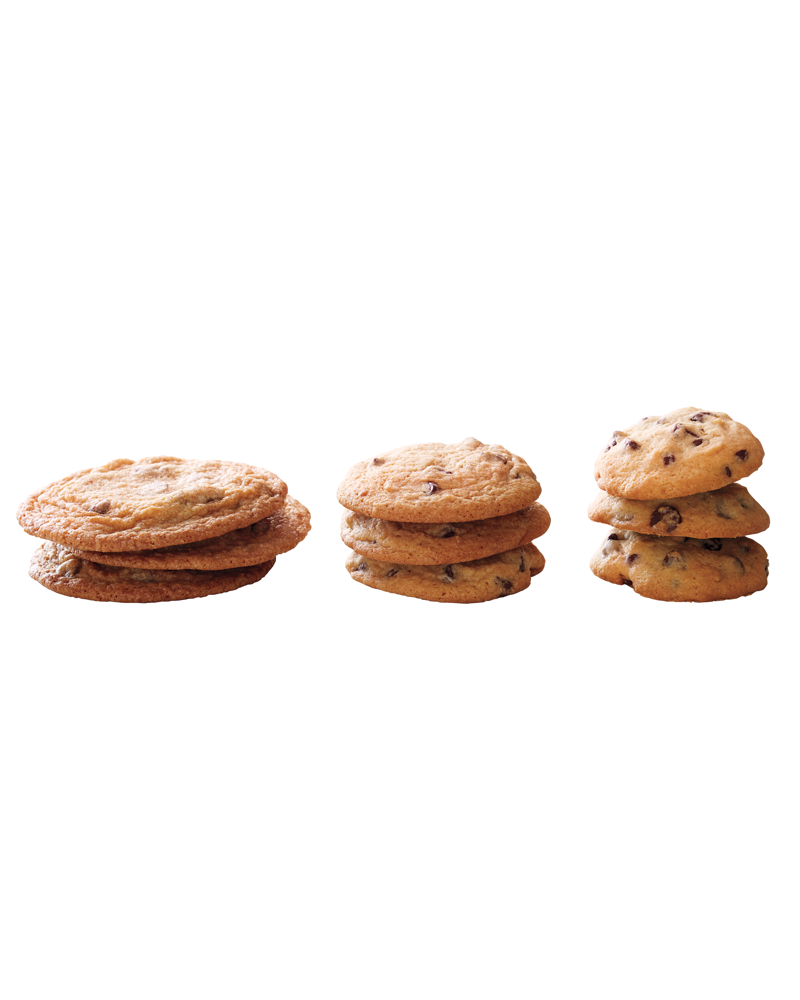

The Journey

Making the dough
This will be how I make these cookies and there are extra stuff that I add to these cookies.
- Grab your big ole kitchenaid stand mixer and throw in that butter and sugar to start mixing!
- Gradually increase the speed and scraping the sides every 3 minutes and slowly add the 2 eggs, one at a time, whenever it looks halfway done throught the creaming process (around 15 mins in from creaming).
- Add a pinch of cinnamon and 2-3 teaspoon of vanilla extract for aroma.
- In a seperate bowl, add all of the dry ingredients together and wisk evenly to distribute the salt and baking soda in the flour.
- After the the creaming process has dissoveled all of the sugar, slowly add the dry ingredients using a siff to remove any clumps of leavening.
- Add chocolate chips and 3 tbsp of Nutella, but don't mix for too long or you'll develop gluten in the flour and make a tough cookie.
- Lastly, scoop them out onto a baking tray with parchment paper, and place them in the oven (preheated to 350 degrees fahrenheit) for 8-12 minutes depending on size.
Return to Homepage